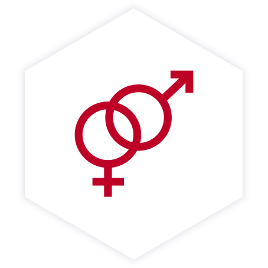

Паста Themra активно применяется для лечения половых расстройств как у мужчин, так и у женщин.
У мужчин она способствует выработке тестостерона, что положительно влияет на потенцию. Способствует увеличению числа и подвижности сперматозоидов, улучшает состояние мочеполовой системы. По отзывам покупателей, Epimedyumlu Macun используется в комплексе для лечения аденомы простаты, импотенции и простатита.
Эпимедиумная паста значительно повышает чувственность и нормализует менструальный цикл и работу половой системы у женщин. Покупательницами часто применяется как дополнительное средство в комплексном лечения бесплодия, причиной которого является эстрогенный фактор. Паста помогает при гипофункции половых желез, нарушениях работы яичников.
Способ применения для лечения половых нарушений: за 20-40 минут до полового акта. Для лечения заболеваний (в том числе при бесплодии) следует принимать по половине чайной ложки утром и вечером. Максимальная суточная доза – 1 чайная ложка.
Необходимо использовать деревянную или пластиковую ложку.
Принимать следует через час после приема пищи.
Перед употреблением ее необходимо как следует перемешать.
Эпимедиумная паста имеет полностью натуральный состав, по сути это продукт из меда и комплекса трав: экстракт эпимедиума (Epimedium, Горянка корейская), лиофилизированное маточное молочко, пчелиная пыльца, цветочный мёд, экстракт трибулуса (Tribulus, Колючая лоза), мака перуанская (Lepidium), экстракт листьев гинкго билоба (Ginkgo Biloba), порошок плодов рожкового дерева (Цератоний стручковый), американский женьшень, сибирский женьшень, красный женьшень, имбирь, корень калгана, корица, листья колы, листья крапивы, тыква, овес, сироп глюкозы, тутовая патока, ванилин.
Такой состав позволяет говорить о пасте Themra как природном натуральном средстве без дополнительных химических добавок, красителей и консервантов.
| Производитель | Themra |
| Страна производства | Турция |
| Возрастное ограничение | 18+ |
| Вес (грамм) | 240 |
| Срок годности | 36 месяцев |
| Противопоказания | Индивидуальная непереносимость |
| Способ применения | Указан в описании |
Купил на сайте эпимедиумную пасту, на вопросы ответили быстро. Покупал для укрепления иммунитета. Часто болел, после работы сил ни на что не оставалось. Сейчас прихожу с работы, выхожу на прогулки, при этом остаются силы что-то сделать еще и дома, стали меньше болеть мышцы при нагрузках. Жена тоже мной очень довольна, заметила изменения в лучшую сторону. Пью только не как рекомендуют, а по половине чайной ложке.
Заказал эпимедиумню пасту в этом магазине, остался очень доволен, менеджер быстро и без лишних вопросов оформила заказ, заказ забрал в тот же день самовывозом, быстро и удобно. Давно веду здоровый образ жизни и стараюсь правильно питаться. Выбирал, чтоб паста была натуральная, без химии и вреда для организма. Через некоторое время после того, как стал принимать, меньше устаю на работе, появилось больше энергии и сил. Легче просыпаюсь утром, сил хватает до поздней ночи, у пасты много полезных свойств, не надо принимать несколько средств.
Брал для укрепления иммунитета, а укрепил и семейные отношения))) В общем довольны и я и жена. Теперь пьем вместе, и заказываем постоянно, быстро доставляют и цена минимальная, дешевле не нашел. В общем рекомендую!